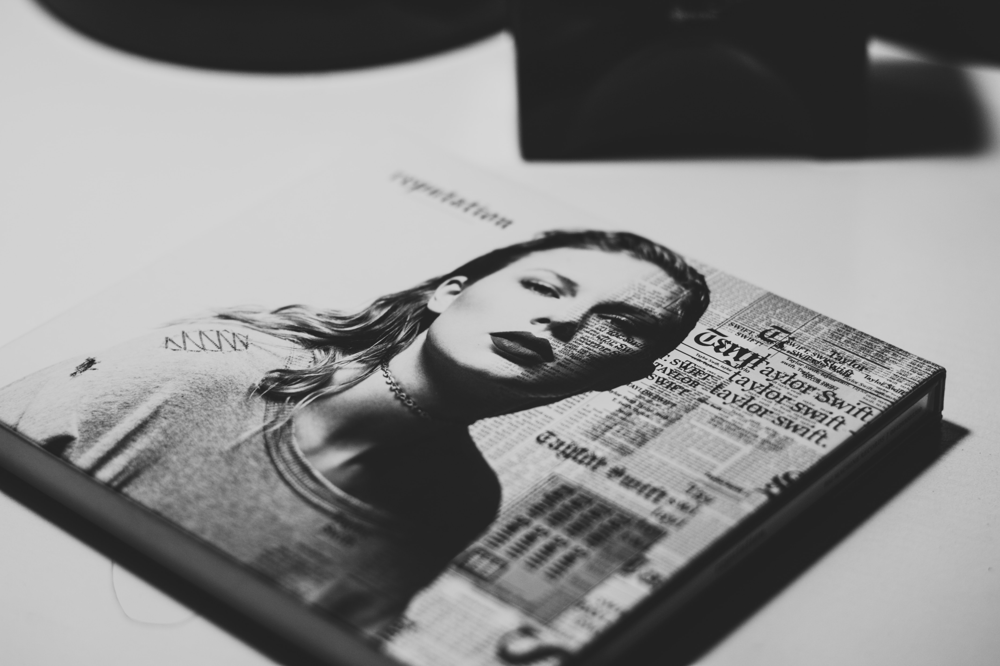

For Taylor's album, Reputation, her and her team took a different approach in how they announced this album. On August 18, 2017, Swift blanked out all social media accounts belonging to her. Then during the days following, she would uploaded silent black-and-white videos of CGI snakes onto these pages. Her instagram page on August 23rd was the place to be for an official announcement of the title Reputation and cover artwork. August 24, she released the albums' lead single "Look What You Made Me Do" which quickly jumped to number one with the biggest single-week sales and streaming figures in the US in 2017. "Look What You Made Me Do" was also Taylor's first number one on the UK Singles Chart with its music video breaking the record for the most 24-hour views on YouTube. Her next released single from the album was "...Ready for it?" through a collaboration with ESPN at a college football match on September 2nd. Before the album could be fully released, "Gorgeous", "Call It What You Want", and "New Year's Day", were released as promotional singles.
Reputation Album" class="center">Taylor Swift released Reputation as her sixth studio album under Big Machine Records. She worked with various producers during her year-long hideout from the public after her fifth studio album 1989. Reputation consists of 15 tracks lasting over 55 minutes. This album, unlike her previous others, fits into the electropop, trap, and R&B genre's. Her previous album, 1989, being her debut into pop music with albums one through four being primarily country. Reputation is inspired by the show Game of Thrones, the West-Kardashian controversy, and the media scrutiny she went through.
© Taylor Swift/Intro to HTML